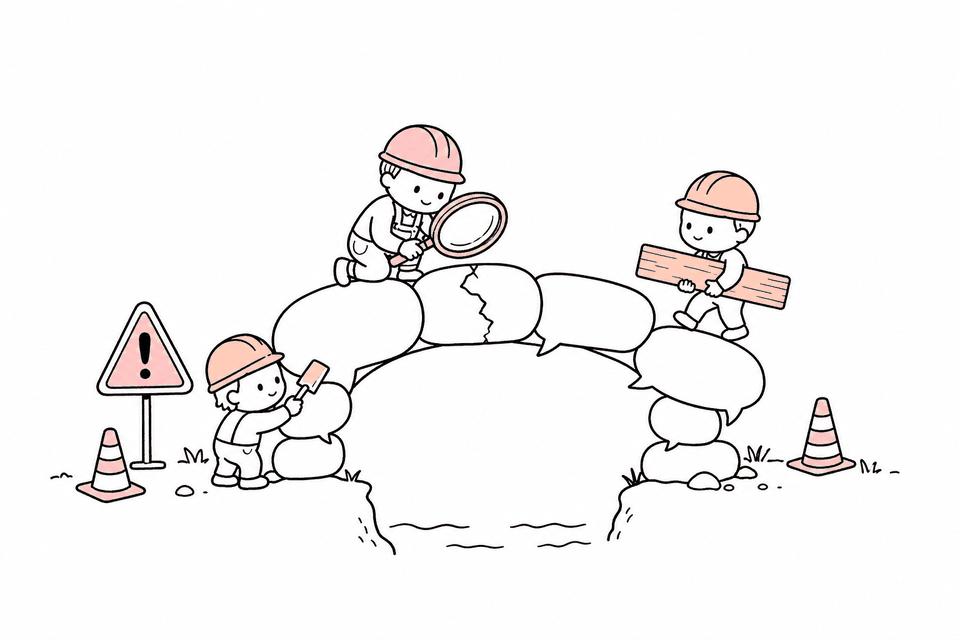

What's next
Three sites, still under construction.
The prototype works: briefings from the dataset, two very different listeners, every claim linked to its source. Here's what we'd build next, with the numbers from this build and the problems we already know about.

Under construction · I · Cost
Make it cheap enough to give away
Today the council reads all 1,740 articles for $12.84, and one listener costs about 48 cents a day. Most of that is the voice: ElevenLabs narration is 28 cents, and the spoken answers to three questions are another 17.
Where it stands
- Seven persona calls per article, each sending the whole article.
- Every listener's narration is generated from scratch, even for shared stories.
- Every article gets a full council, even price tickers and duplicate translations.
What we'll build
- Triage first. A small, cheap model skips stories no persona would react to. With prompt caching, the council drops from $12.84 to $4.81 for the full dataset.
- Batch overnight. The council runs before anyone's awake, so it can use the half-price batch API.
- Voice once, not per listener. Narrate shared facts once per story and cache them, and only voice each listener's own "why it matters" line. A budget tier on OpenAI TTS cuts voice from 28 cents to about 4.
Target 10 to 15 cents per listener per day, from about 48.

Under construction · II · Business model and scale
Who pays, and how it grows
The costs have an unusual shape: the council's cost grows with the news, not the audience. Ten times the articles costs ten times as much ($128); ten times the listeners leaves the council bill where it was. Margins improve as more people listen.
Who pays
- Publishers license it as a premium tier of their subscription, priced per active listener. It's a retention feature, not an ad slot.
- Professional desks (the Maxes) pay per seat for a briefing they can check before acting.
- Syndicators like Newstex resell it on the feeds they already deliver: one integration, many outlets.
How it scales
- A real search index. Swap the in-memory keyword search for a vector index that holds months of news, not four days.
- A morning job queue. Council, briefings and narration run as parallel jobs, ready before 6 a.m. for every listener.
- Every language in the feed. The dataset already carries German and Dutch, so each listener should hear their briefing in their own language.
Target one integration per syndicator, briefings in English, German and Dutch.

Under construction · III · Known issues
What's broken, and how we'll fix it
We'd rather say it before you find it. These are the weak spots we know about from building and testing the prototype.
- The council members are simulations
- Issue: seven characters written by a language model can slide into stereotypes of the people they stand for. Fix: co-write each persona with real people from that walk of life, audit their reactions for bias, and keep labelling them as fictional.
- Not every claim is pinned down yet
- Issue: 36 of 38 sentences in the demo briefings match a verbatim passage; the other 2 only link to their article. Figures are only checked when written as digits, so "four point six percent" slips past, and a few council reviews per batch fail the quote check and wait for a retry. Fix: normalise spoken numbers before checking, add a second verifier pass, and hold back any story with an unverified fact.
- The learning loop isn't closed
- Issue: questions, skips and replays aren't stored yet, so steps 5 and 6 of the flywheel are a plan. Answers that reach the web also depend on the quality of what it finds. Fix: log signals with consent and without identities, give editors a daily "what people asked" view, and rank web sources by trust.
- Live answers need a server that's awake
- Issue: the public demo replays recorded answers; live questions and the voice briefing need a running server, and the first voice reply takes a few seconds. Fix: an always-on deployment, streamed answers and pre-warmed voices.
The short version